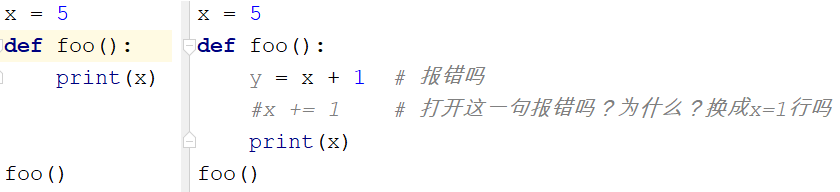

函数作用域
1. 作用域
一个标识符的可见范围，这就是标识符的作用域。一般常说的是变量的作用域
1 | def foo(): |
上例中x不可以访问到，会抛出异常（NameError: name ‘x’ is not defined），原因在于函数是一个封装，它会开辟一个作用域，x变量被限制在这个作用域中，所以在函数外部x变量不可见。
注意：每一个函数都会开辟一个作用域
2. 作用域分类
- 全局作用域
- 在整个程序运行环境中都可见
- 全局作用域中的变量称为全局变量global
- 局部作用域
- 在函数、类等内部可见
- 局部作用域中的变量称为局部变量，其使用范围不能超过其所在局部作用域
- 也称为本地作用域local
1 | # 局部变量 |
1 | # 全局变量 |
- 一般来讲外部作用域变量可以在函数内部可见，可以使用
- 反过来，函数内部的局部变量，不能在函数外部看到
3. 函数嵌套
在一个函数中定义了另外一个函数
1 | def outer(): |
内部函数inner不能在外部直接使用，会抛NameError异常，因为它在函数外部不可见。
其实，inner不过就是一个标识符，就是一个函数outer内部定义的变量而已。
嵌套结构的作用域
对比下面嵌套结构，代码执行的效果
1 | def outer1(): |
从执行的结果来看：
- 外层变量在内部作用域可见
- 内层作用域inner中，如果定义了 o = 97 ，相当于在当前函数inner作用域中重新定义了一个新的变量o，但是，这个o并不能覆盖掉外部作用域outer2中的变量o。只不过对于inner函数来说，其只能可见自己作用域中定义的变量o了
| 内建函数 | 函数签名 | 说明 |
|---|---|---|
| chr | chr(i) | 通过unicode编码返回对应字符 |
| ord | ord© | 获得字符对应的unicode |
1 | print(ord('中'), hex(ord('中')), '中'.encode(), '中'.encode('gbk')) |
4. 一个赋值语句的问题
再看下面左右2个函数

| 左边函数 | 右边函数 |
|---|---|
| 正常执行，函数外部的变量在函数内部可见 | 执行错误吗，为什么？难道函数内部又不可见了？y = x + 1可以正确执行，可是为什么x += 1却不能正确执行？ |
仔细观察函数2返回的错误指向x += 1，原因是什么呢?
1 | x = 5 |
原因分析：
- x += 1 其实是 x = x + 1
- 只要有"x="出现，这就是赋值语句。相当于在foo内部定义一个局部变量x，那么foo内部所有x都是这个局部变量x了
- x = x + 1 相当于使用了局部变量x，但是这个x还没有完成赋值，就被右边拿来做加1操作了
1 | x = 5 |
如何解决这个常见问题
5. global语句
1 | x = 5 |
- 使用global关键字的变量，将foo内的x声明为使用外部的全局作用域中定义的x
- 全局作用域中必须有x的定义
如果全局作用域中没有x定义会怎样？
1 | # 有错吗？ |
1 | # 有错吗？ |
使用global关键字定义的变量，虽然在foo函数中声明，但是这将告诉当前foo函数作用域，这个x变量将使用外部全局作用域中的x。
即使是在foo中又写了 x = 10 ，也不会在foo这个局部作用域中定义局部变量x了。
使用了global，foo中的x不再是局部变量了，它是全局变量。
总结
- x+=1 这种是特殊形式产生的错误的原因？先引用后赋值，而python动态语言是赋值才算定义，才能被引用。解决办法，在这条语句前增加x=0之类的赋值语句，或者使用global 告诉内部作用域，去全局作用域查找变量定义
- 内部作用域使用 x = 10 之类的赋值语句会重新定义局部作用域使用的变量x，但是，一旦这个作用域中使用 global 声明x为全局的，那么x=5相当于在为全局作用域的变量x赋值
global使用原则
- 外部作用域变量会在内部作用域可见，但也不要在这个内部的局部作用域中直接使用，因为函数的目的就是为了封装，尽量与外界隔离
- 如果函数需要使用外部全局变量，请尽量使用函数的形参定义，并在调用传实参解决
- 一句话：不用global。学习它就是为了深入理解变量作用域
6. 闭包***
自由变量：未在本地作用域中定义的变量。例如定义在内层函数外的外层函数的作用域中的变量
闭包：就是一个概念，出现在嵌套函数中，指的是内层函数引用到了外层函数的自由变量，就形成了闭包。很多语言都有这个概念，最熟悉就是JavaScript
1 | def counter(): |
代码分析
- 第8行会执行counter函数并返回inc对应的函数对象，注意这个函数对象并不释放，因为有foo记着
- 第4行会报错吗？为什么
- 不会报错，c已经在counter函数中定义过了。而且inc中的使用方式是为c的元素修改值，而不是重新定义c变量
- 第9行打印什么结果？
- 打印 1 2
- 第11行打印什么结果？
- 打印 3
- 第9行的c和counter中的c不一样，而inc引用的是自由变量正是counter中的变量c
这是Python2中实现闭包的方式，Python3还可以使用nonlocal关键字
再看下面这段代码，会报错吗？使用global能解决吗？
1 | def counter(): |
上例一定出错，使用gobal可以解决
1 | def counter(): |
上例使用global解决，这是全局变量的实现，而不是闭包了。
如果要对这个普通变量使用闭包，Python3中可以使用nonlocal关键字。
7. nonlocal语句
nonlocal：将变量标记为不在本地作用域定义，而是在上级的某一级局部作用域中定义，但不能是全局作用域中定义。
1 | def counter(): |
count 是外层函数的局部变量，被内部函数引用。
内部函数使用nonlocal关键字声明count变量在上级作用域而非本地作用域中定义。
代码中内层函数引用外部局部作用域中的自由变量，形成闭包。
上例是错误的，nonlocal 声明变量 a 不在当前作用域，但是往外就是全局作用域了，所以错误。
8. 函数的销毁
定义一个函数就是生成一个函数对象，函数名指向的就是函数对象。
可以使用del语句删除函数，使其引用计数减1。
可以使用同名标识符覆盖原有定义，本质上也是使其引用计数减1。
Python程序结束时，所有对象销毁。
函数也是对象，也不例外，是否销毁，还是看引用计数是否减为0。
9. 变量名解析原则LEGB***
- Local，本地作用域、局部作用域的local命名空间。函数调用时创建，调用结束消亡
- Enclosing，Python2.2时引入了嵌套函数，实现了闭包，这个就是嵌套函数的外部函数的命名空间
- Global，全局作用域，即一个模块的命名空间。模块被import时创建，解释器退出时消亡
- Build-in，内置模块的命名空间，生命周期从python解释器启动时创建到解释器退出时消亡。例如
- print(open)，print和open都是内置的变量
所以一个名词的查找顺序就是LEGB